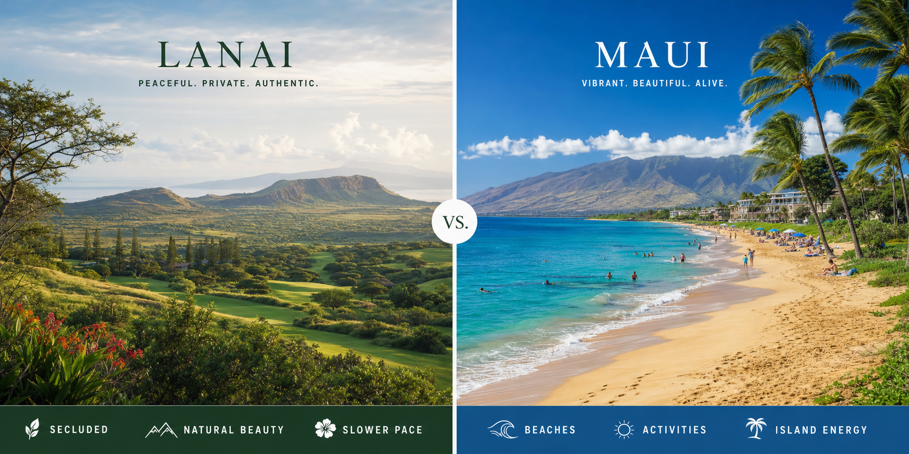
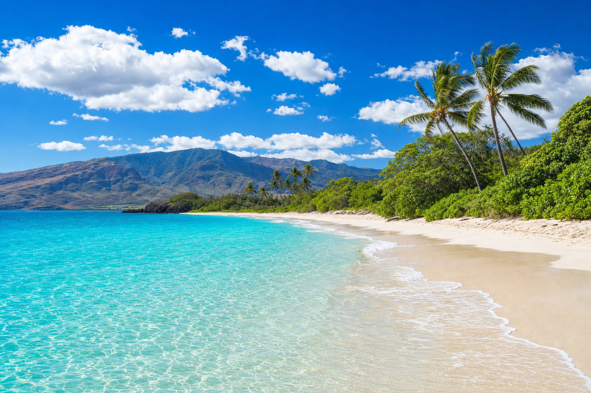
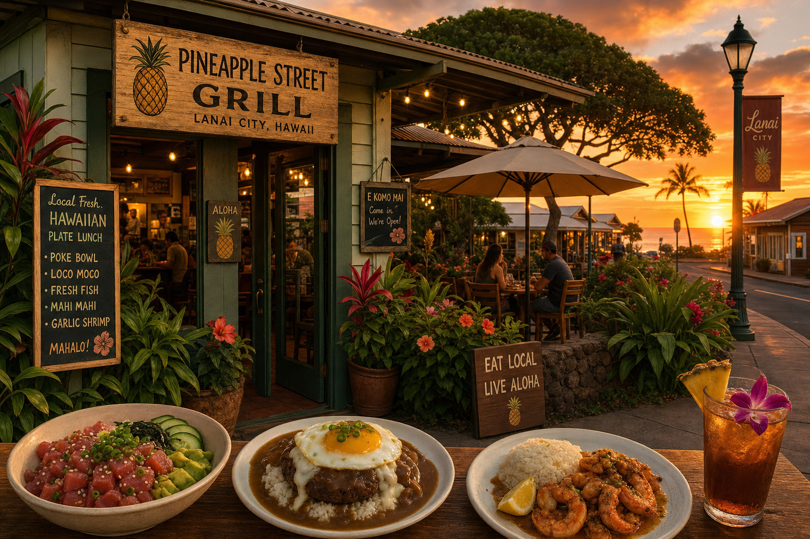
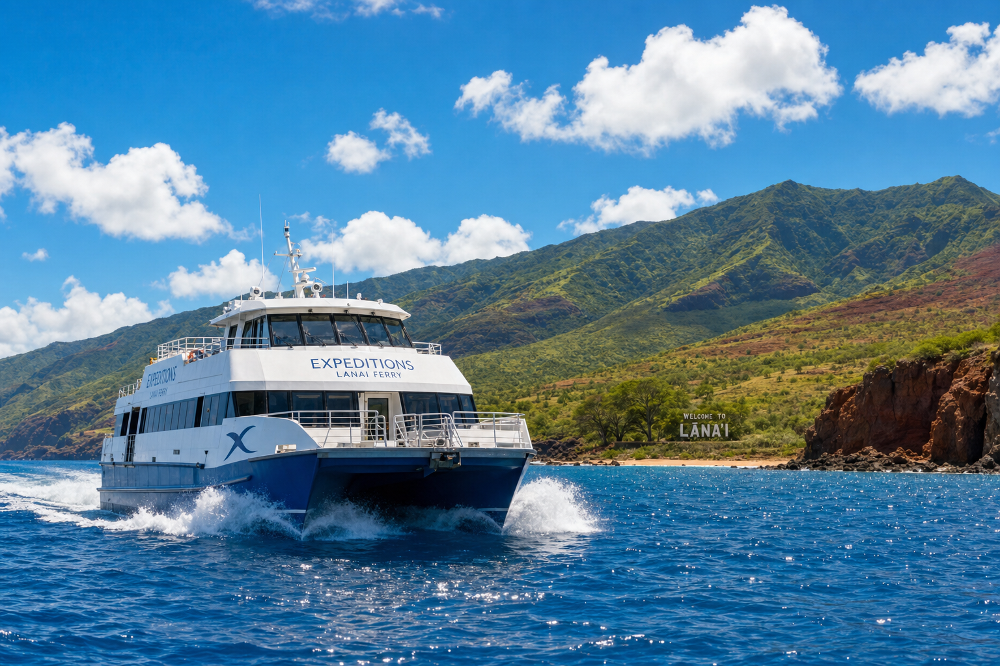

The Lanai Journal
Travel guides, local tips, and stories from Hawaii's most serene island.

Travel Guide
Things to Do in Lanai City
The best local experiences in Lanai City — from the historic Norfolk pine tree to the Saturday market.

Island Comparison
Lanai vs Maui — Which Island to Visit
An honest comparison from someone who lives on Lanai and loves Maui too.

Beach Guide
Guide to Lanai's Beaches
Manele Bay, Shipwreck Beach, Polihua — every beach on Lanai, rated and reviewed by a local.

Food Guide
Best Restaurants in Lanai City
Where to eat in Lanai City — from casual plate lunches to the hidden gem dinner spots only locals know.

Getting Here
Traveling to Lanai from Maui Ferry
Everything you need to know about taking the Expeditions ferry from Maui to Lanai — tips, timing, and what to expect.

Local Secrets
Hidden Gems of Lanai Island
The places only locals know — off-road adventures, secret viewpoints, and quiet coves on Hawaii's most private island.